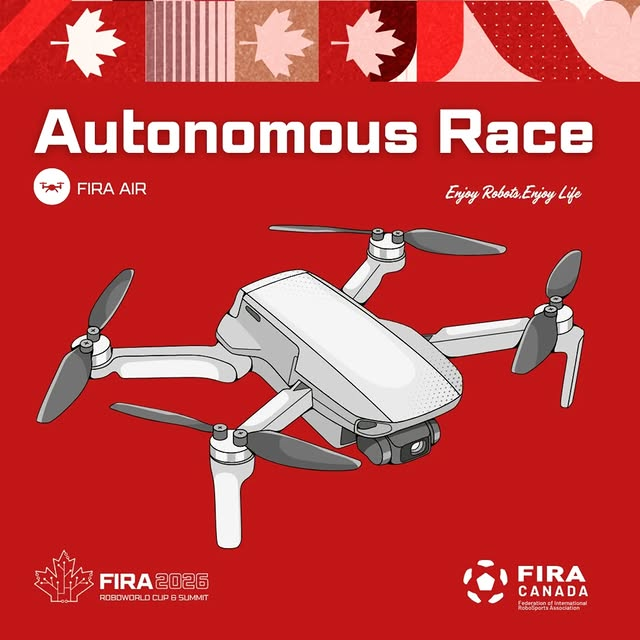
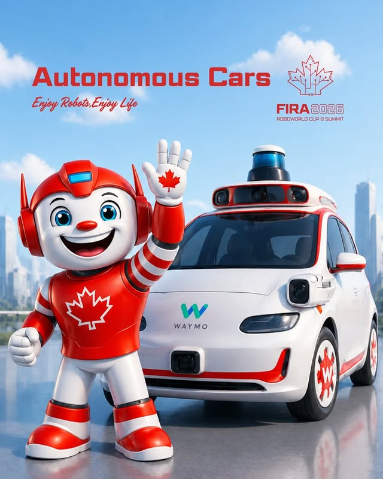
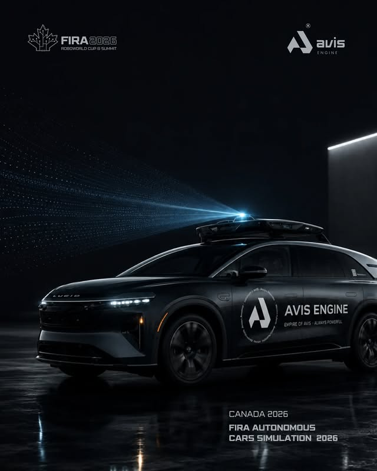
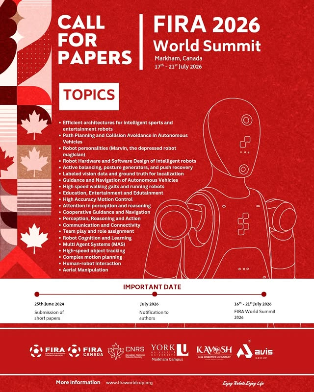

What Is the FIRA RoboWorld Cup
The FIRA RoboWorld Cup is the international championship of fully autonomous robots. FIRA — the Federation of International RoboSports Association — was founded in 1996 in Daejeon, Korea, beginning with MiroSot robot soccer and growing into a worldwide series of robot sports for humanoid, flying, and industrial machines.
FIRA 2026 — Markham, Canada
The 31st edition of the FIRA RoboWorld Cup runs July 17–21, 2026, hosted at the Markham Pan Am Centre and York University's Markham Campus. It is the first time the championship has ever been held in Canada — bringing the global robotics community to the Greater Toronto Area.
FIRA Sports
Headlined by HuroCup — a humanoid robot decathlon where a single robot design must master every discipline:
- Sprint & Marathon
- Long Jump & Weightlifting
- Archery & Basketball
- Obstacle Run & Robot Soccer
League Families
- FIRA Sports — humanoid & soccer events incl. HuroCup
- FIRA AIR — autonomous flying robots
- FIRA Challenges — industrial, rescue & service
- FIRA Youth — the next generation of competitors




A Global Stage
Teams travel from across the world to compete — including squads from Canada, China, Egypt, Germany, Iran, Nepal, Turkey, the USA, and many more. The RoboWorld Cup is as much a meeting of cultures and ideas as it is a contest of engineering.
Why It Matters — and Why Sponsors Belong Here
Competitions like the FIRA RoboWorld Cup are where the next generation of robotics and AI engineers are forged. The autonomy, perception, and control technology on display is the same that powers self-driving vehicles and industrial automation. Backing a team is a direct investment in STEM talent — on a genuine world stage, in front of a global audience.
“Hosting the FIRA RoboWorld Cup 2026 in Canada is a milestone achievement that highlights our country's growing influence.” — Samia Karimi Dastjerdi, President, FIRA Canada
Put Your Brand on the World Stage
Join us in bringing the FIRA RoboWorld Cup to Canada and championing the engineers of tomorrow.
View Sponsorship Tiers